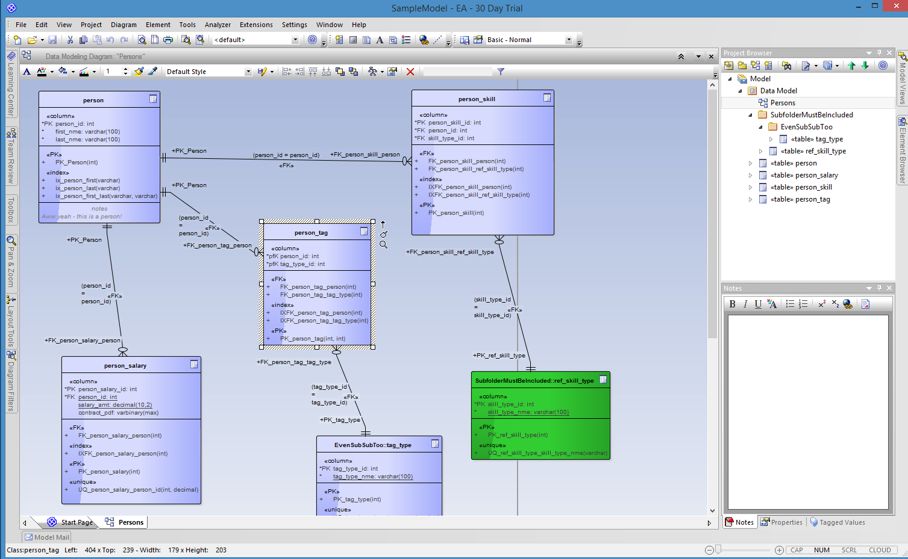
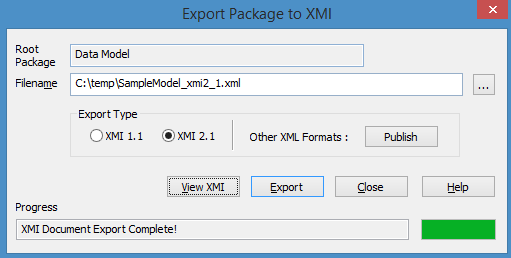

EA to SQL
This utility converts an Enterprise Architect (EA) XMI data model export into a SQL create script for SQL Server.
Usage
Create a data model in Enterprise Architect: 
Export the data model to XMI 2.1:

1: 2: 3: 4: 5: 6: 7: 8: |
#r "EaToSql.dll" open EaToSql // read in the tables from the XMI file let binFolder filename = System.IO.Path.Combine(__SOURCE_DIRECTORY__, "../../bin", filename) let tablesFromXmi = use reader = new System.IO.StreamReader(binFolder "SampleModel_xmi2_1.xml") readTablesFromXmi reader |
Or just define your data model manually:
1: 2: 3: 4: 5: 6: 7: 8: 9: 10: 11: 12: 13: 14: 15: 16: 17: 18: 19: 20: 21: 22: 23: 24: |
open EaToSql.Dsl let tables = [ { table "person" [ col "id" IntAuto col "first" (NVarChar 100) col "last" (NVarChar 100) ] with Indexes = [ ix ["first"] ix ["last"] ix ["first";"last"] ] } { table "ref_tag" [ col "id" IntAuto col "tag_nme" (NVarChar 100) ] with Indexes = [ ix ["first"] ix ["last"] ix ["first"; "last"] ] Uniques = [ uq ["tag_nme"] ] } { table "person_tag" [ col "person_id" Int; col "tag_id" Int ] with PrimaryKey = pk ["person_id";"tag_id"] Indexes = [ ix ["person_id"] ] Uniques = [ uq ["person_id";"tag_id"] ] Relationships = [ rel ["person_id"] (target "person" ["person_id"]) ]} ] |
Finally, generate the SQL create statements:
1:
|
generateSqlFromModel tables |> Seq.toArray |
The output is:
1: 2: 3: 4: 5: 6: 7: 8: 9: 10: 11: 12: 13: 14: 15: |
val it : string [] = [|"CREATE TABLE [person] (id int NOT NULL IDENTITY(1,1), first nvarchar(100) NOT NULL, last nvarchar(100) NOT NULL"; "CONSTRAINT [pk_person_id] PRIMARY KEY CLUSTERED (id))"; "CREATE INDEX [ix_person_first] ON [person] (first)"; "CREATE INDEX [ix_person_last] ON [person] (last)"; "CREATE INDEX [ix_person_first_last] ON [person] (first, last)"; "CREATE TABLE [ref_tag] (id int NOT NULL IDENTITY(1,1), tag_nme nvarchar(100) NOT NULL"; "CONSTRAINT [pk_ref_tag_id] PRIMARY KEY CLUSTERED (id))"; "CREATE INDEX [ix_ref_tag_first] ON [ref_tag] (first)"; "CREATE INDEX [ix_ref_tag_last] ON [ref_tag] (last)"; "CREATE INDEX [ix_ref_tag_first_last] ON [ref_tag] (first, last)"; "CREATE TABLE [person_tag] (person_id int NOT NULL, tag_id int NOT NULL"; "CONSTRAINT [pk_person_tag_person_id_tag_id] PRIMARY KEY CLUSTERED (person_id, tag_id))"; "CREATE INDEX [ix_person_tag_person_id] ON [person_tag] (person_id)"; "ALTER TABLE [person_tag] ADD CONSTRAINT [fk_person_tag_person] FOREIGN KEY (person_id) REFERENCES [person] (person_id)"|] |
namespace EaToSql
val binFolder : filename:string -> string
Full name: Tutorial.binFolder
Full name: Tutorial.binFolder
val filename : string
namespace System
namespace System.IO
type Path =
static val DirectorySeparatorChar : char
static val AltDirectorySeparatorChar : char
static val VolumeSeparatorChar : char
static val InvalidPathChars : char[]
static val PathSeparator : char
static member ChangeExtension : path:string * extension:string -> string
static member Combine : params paths:string[] -> string + 3 overloads
static member GetDirectoryName : path:string -> string
static member GetExtension : path:string -> string
static member GetFileName : path:string -> string
...
Full name: System.IO.Path
static val DirectorySeparatorChar : char
static val AltDirectorySeparatorChar : char
static val VolumeSeparatorChar : char
static val InvalidPathChars : char[]
static val PathSeparator : char
static member ChangeExtension : path:string * extension:string -> string
static member Combine : params paths:string[] -> string + 3 overloads
static member GetDirectoryName : path:string -> string
static member GetExtension : path:string -> string
static member GetFileName : path:string -> string
...
Full name: System.IO.Path
System.IO.Path.Combine(params paths: string []) : string
System.IO.Path.Combine(path1: string, path2: string) : string
System.IO.Path.Combine(path1: string, path2: string, path3: string) : string
System.IO.Path.Combine(path1: string, path2: string, path3: string, path4: string) : string
System.IO.Path.Combine(path1: string, path2: string) : string
System.IO.Path.Combine(path1: string, path2: string, path3: string) : string
System.IO.Path.Combine(path1: string, path2: string, path3: string, path4: string) : string
val tablesFromXmi : seq<Table>
Full name: Tutorial.tablesFromXmi
Full name: Tutorial.tablesFromXmi
val reader : System.IO.StreamReader
Multiple items
type StreamReader =
inherit TextReader
new : stream:Stream -> StreamReader + 9 overloads
member BaseStream : Stream
member Close : unit -> unit
member CurrentEncoding : Encoding
member DiscardBufferedData : unit -> unit
member EndOfStream : bool
member Peek : unit -> int
member Read : unit -> int + 1 overload
member ReadLine : unit -> string
member ReadToEnd : unit -> string
...
Full name: System.IO.StreamReader
--------------------
System.IO.StreamReader(stream: System.IO.Stream) : unit
System.IO.StreamReader(path: string) : unit
System.IO.StreamReader(stream: System.IO.Stream, detectEncodingFromByteOrderMarks: bool) : unit
System.IO.StreamReader(stream: System.IO.Stream, encoding: System.Text.Encoding) : unit
System.IO.StreamReader(path: string, detectEncodingFromByteOrderMarks: bool) : unit
System.IO.StreamReader(path: string, encoding: System.Text.Encoding) : unit
System.IO.StreamReader(stream: System.IO.Stream, encoding: System.Text.Encoding, detectEncodingFromByteOrderMarks: bool) : unit
System.IO.StreamReader(path: string, encoding: System.Text.Encoding, detectEncodingFromByteOrderMarks: bool) : unit
System.IO.StreamReader(stream: System.IO.Stream, encoding: System.Text.Encoding, detectEncodingFromByteOrderMarks: bool, bufferSize: int) : unit
System.IO.StreamReader(path: string, encoding: System.Text.Encoding, detectEncodingFromByteOrderMarks: bool, bufferSize: int) : unit
type StreamReader =
inherit TextReader
new : stream:Stream -> StreamReader + 9 overloads
member BaseStream : Stream
member Close : unit -> unit
member CurrentEncoding : Encoding
member DiscardBufferedData : unit -> unit
member EndOfStream : bool
member Peek : unit -> int
member Read : unit -> int + 1 overload
member ReadLine : unit -> string
member ReadToEnd : unit -> string
...
Full name: System.IO.StreamReader
--------------------
System.IO.StreamReader(stream: System.IO.Stream) : unit
System.IO.StreamReader(path: string) : unit
System.IO.StreamReader(stream: System.IO.Stream, detectEncodingFromByteOrderMarks: bool) : unit
System.IO.StreamReader(stream: System.IO.Stream, encoding: System.Text.Encoding) : unit
System.IO.StreamReader(path: string, detectEncodingFromByteOrderMarks: bool) : unit
System.IO.StreamReader(path: string, encoding: System.Text.Encoding) : unit
System.IO.StreamReader(stream: System.IO.Stream, encoding: System.Text.Encoding, detectEncodingFromByteOrderMarks: bool) : unit
System.IO.StreamReader(path: string, encoding: System.Text.Encoding, detectEncodingFromByteOrderMarks: bool) : unit
System.IO.StreamReader(stream: System.IO.Stream, encoding: System.Text.Encoding, detectEncodingFromByteOrderMarks: bool, bufferSize: int) : unit
System.IO.StreamReader(path: string, encoding: System.Text.Encoding, detectEncodingFromByteOrderMarks: bool, bufferSize: int) : unit
val readTablesFromXmi : (System.IO.TextReader -> seq<Table>)
Full name: EaToSql.Api.readTablesFromXmi
Full name: EaToSql.Api.readTablesFromXmi
module Dsl
from EaToSql
from EaToSql
val tables : Table list
Full name: Tutorial.tables
Full name: Tutorial.tables
val table : name:ModelName -> cols:ColumnDef list -> Table
Full name: EaToSql.Dsl.table
Full name: EaToSql.Dsl.table
val col : name:ModelName -> dtype:DataType -> ColumnDef
Full name: EaToSql.Dsl.col
Full name: EaToSql.Dsl.col
union case DataType.IntAuto: DataType
union case DataType.NVarChar: length: int -> DataType
val ix : cols:ColumnRef list -> Index
Full name: EaToSql.Dsl.ix
Full name: EaToSql.Dsl.ix
val uq : cols:ColumnRef list -> Unique
Full name: EaToSql.Dsl.uq
Full name: EaToSql.Dsl.uq
union case DataType.Int: DataType
type PrimaryKey = NamedColumnRefs
Full name: EaToSql.Model.PrimaryKey
Full name: EaToSql.Model.PrimaryKey
val pk : cols:ColumnRef list -> PrimaryKey
Full name: EaToSql.Dsl.pk
Full name: EaToSql.Dsl.pk
val rel : srcCols:ColumnRef list -> target:RelTarget -> Relationship
Full name: EaToSql.Dsl.rel
Full name: EaToSql.Dsl.rel
val target : tname:ModelName -> cols:ColumnRef list -> RelTarget
Full name: EaToSql.Dsl.target
Full name: EaToSql.Dsl.target
val generateSqlFromModel : (seq<Table> -> seq<string>)
Full name: EaToSql.Api.generateSqlFromModel
Full name: EaToSql.Api.generateSqlFromModel
module Seq
from Microsoft.FSharp.Collections
from Microsoft.FSharp.Collections
val toArray : source:seq<'T> -> 'T []
Full name: Microsoft.FSharp.Collections.Seq.toArray
Full name: Microsoft.FSharp.Collections.Seq.toArray
Multiple items
val string : value:'T -> string
Full name: Microsoft.FSharp.Core.Operators.string
--------------------
type string = System.String
Full name: Microsoft.FSharp.Core.string
val string : value:'T -> string
Full name: Microsoft.FSharp.Core.Operators.string
--------------------
type string = System.String
Full name: Microsoft.FSharp.Core.string